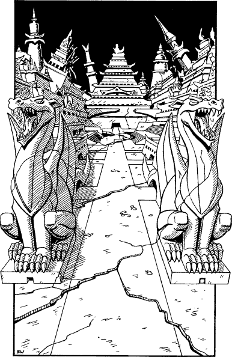

175
The climb to the arch at the top of the stairs is a slow and laborious one. Each step is as tall as a young tree, and the smooth, black stone offers few handholds. Several hours slip by before you reach the summit. There you stare down through the great archway at a stupendous sight.

The streets and buildings of an ancient civilization lie before you, disappearing into the gloom of a titanic chasm of immeasurable size. Ziggurats and towers, their carved walls cracked and crumbling, lean at impossible angles, having sunk into the soil over the centuries. This is Zaaryx, the legendary metropolis that was once home to a race fathered by Nyxator—the greatest of all dragons. It is the only city to have survived the Age of Chaos that followed the demise of their race.
A wide avenue leads from the archway to enter the city at a place flanked by two massive statues of dragons sitting on their haunches with their stone-fanged mouths agape. You stop to rest here and you must now eat a Meal or lose 3 ENDURANCE points. (If you possess the Magnakai Discipline of Huntmastery, you are able to forage for food from the wasteland of Zaaryx and therefore you do not need to make any deductions.)
You are about to set off into the city when you catch a glimpse of a shadowy figure moving furtively among the ruins of an edifice to your left.
If you have completed the Lore-circle of the Spirit, turn to 281.
If you have yet to complete this Lore-circle, you can investigate the shadow; turn to 122.
Or you can ignore it and continue along the avenue; turn to 61.